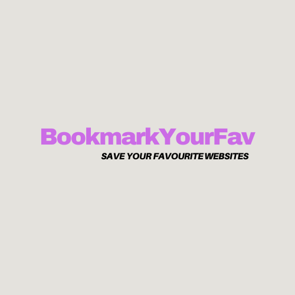

Welcome to Bookmarkmyfav, your ultimate solution for bookmarking and organizing your favorite web
pages. We understand the importance of having quick and easy access to your most visited sites,
interesting articles, useful resources, and any other web content you might want to revisit. With
Bookmarkmyfav, you can save any web page with a simple click and categorize your bookmarks for
efficient browsing later.
One of the standout features of Bookmarkmyfav is our commitment to your privacy. Unlike many other
bookmarking services, we do not store any of your data on our servers. All your bookmarks are saved
locally in your browser, which means you have full control over your data. This ensures that your
personal information and browsing habits remain private and secure.
Our user-friendly interface is designed to make managing your bookmarks as simple as possible. You
can easily categorize your bookmarks, and search through them to find exactly what you
need when you need it.
Bookmarkmyfav is perfect for anyone who wants to keep their web content organized and easily
accessible. Whether you're a student collecting research links, a professional keeping track of
industry news, or just someone who loves to browse the web, our tool will help you stay organized
and efficient.
Join the Bookmarkmyfav community today and take the first step towards a more organized and private
web browsing experience. Keep your favorite web content at your fingertips, anytime, anywhere, with
the assurance that your privacy is fully protected.